【教程】基于STM32的CV键盘
前言
使用STM32F103C8T6MCU做键盘主控。
软件环境：Keil5 MDK，STM32CubeMX
基本硬件：STM32最小系统板，SWDLink/STLink，USB连接线
小知识
什么是USB-HID
USB-HID（Universal Serial Bus-Human Interface Device）中文名为 通用串行总线人机交互设备，比如USB键盘，USB鼠标等等。USB-HID设备将要发送接收的数据封装成标准的USB_HID报告，并发送给计算机，计算机可以解析这些报告并作出相应的响应。简单的说就是这些设备无需驱动就可以和计算机交互。更多介绍可查看HID 简介 - USB中文网 (usbzh.com)。
什么是HID描述符
HID描述符是USB-HID设备中定义设备的特性和功能的数据结构，用于告诉计算机有关设设备的信息，比如设备类型，功能等等。当设备插入计算机时通过读取HID描述符来了解设备的功能等。等多介绍可查看HID设备的描述符 - USB中文网 (usbzh.com)
教程
配置USB-HID
当然，我也不可能手搓HID驱动，我也不会，哈哈。这里就要用到STM32CubeMX把STM32配置成HID设备。
打开CudeMX新建工程，选择STM32F103C8T6，开始新建工程。
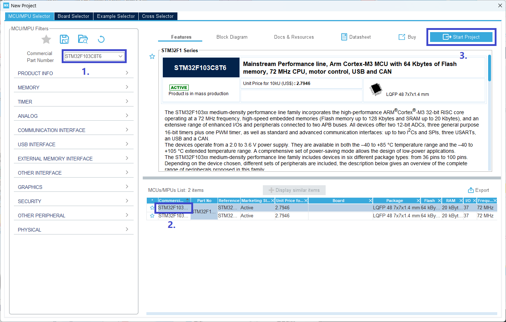
根据自己的下载器选择，SWD就选Serial Wire，不选择的话下次下载时就不能用WSD下载，除非用串口下载一个开启WSD下载的程序。
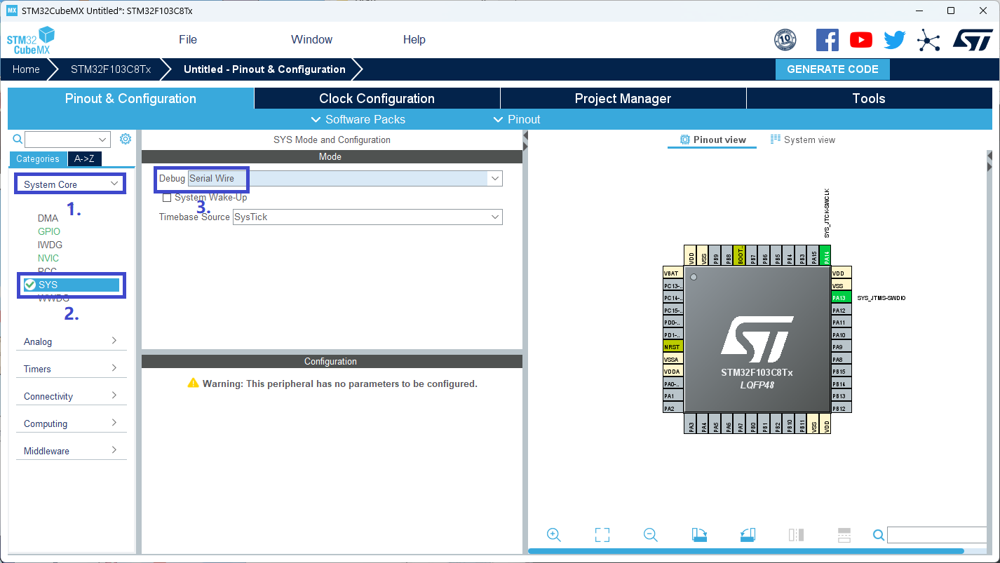
在RCC这里选择使用外部晶振。
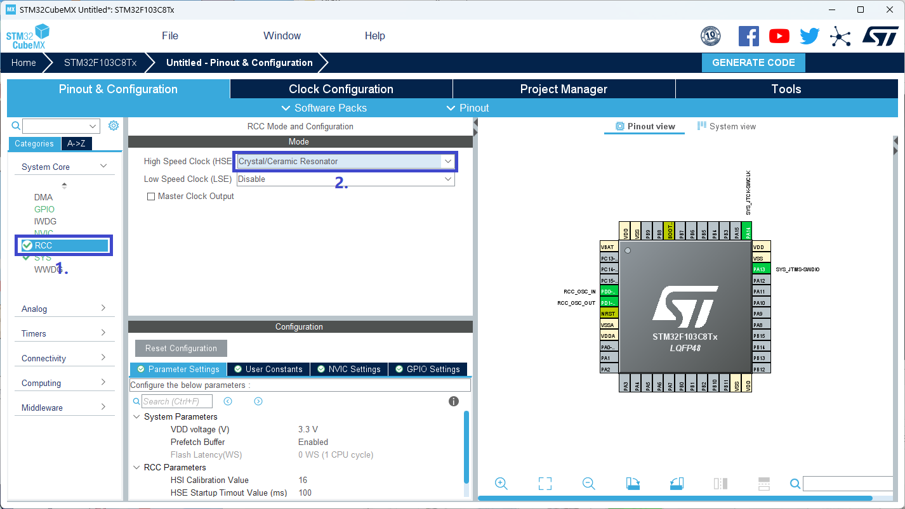
启用USB设备。
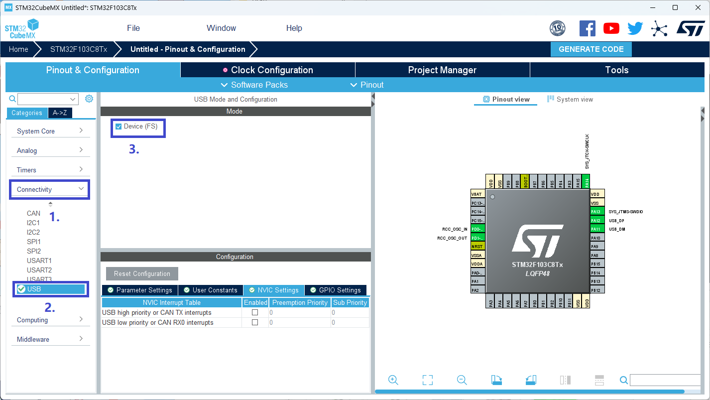
在这里选择HID设备，可以更改设备厂商和型号满足自定义的需求。
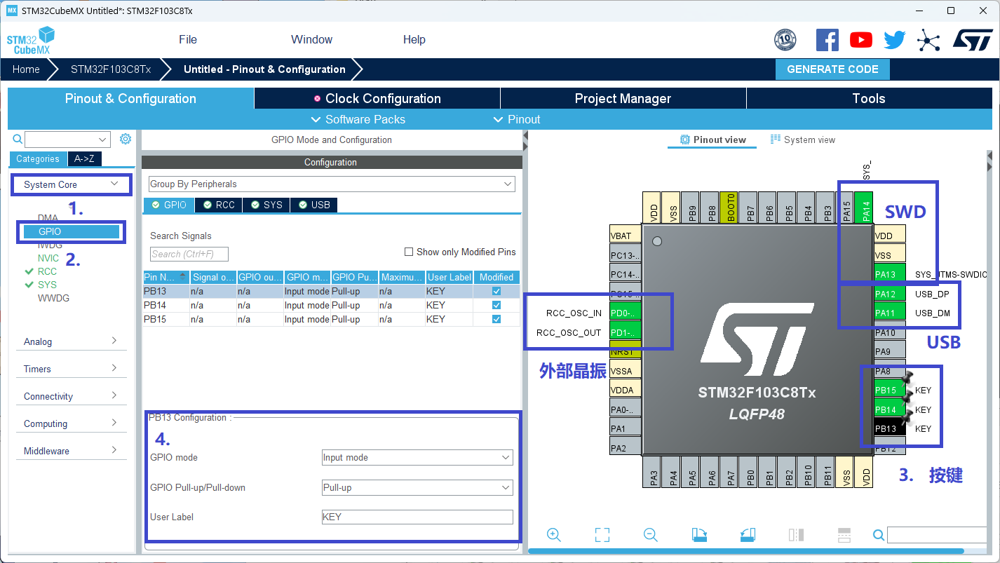
按提示配置GPIO引脚为上拉输入模式，也可以暂时不配置，事后在keil里配置。确保图中框着的几个引脚已配置好。
时钟配置页选择自动配置时钟。
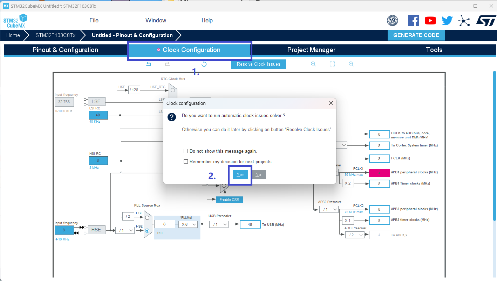
进入工程管理，配置好工程名字，工程路径，开发环境选择MDK-ARM，把最小堆大小设置0x600。
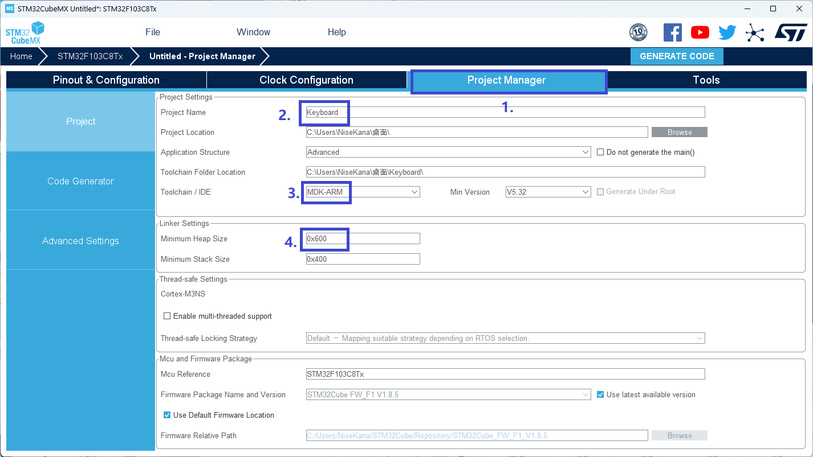
勾选生成单独的.C/.H文件，生成工程。
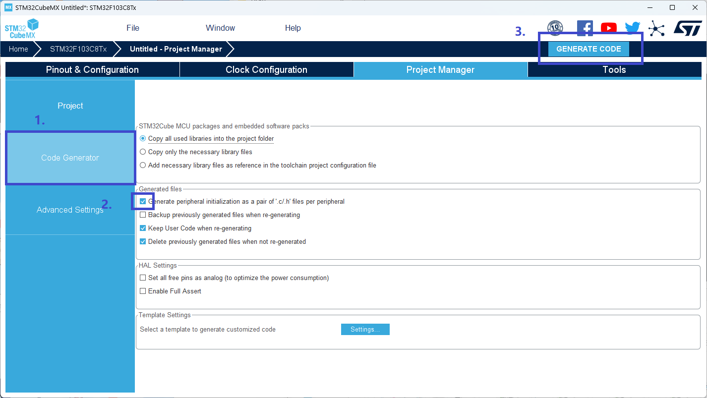
Keil配置工程
找到刚生成的工程，先添加启动文件，操作如下。
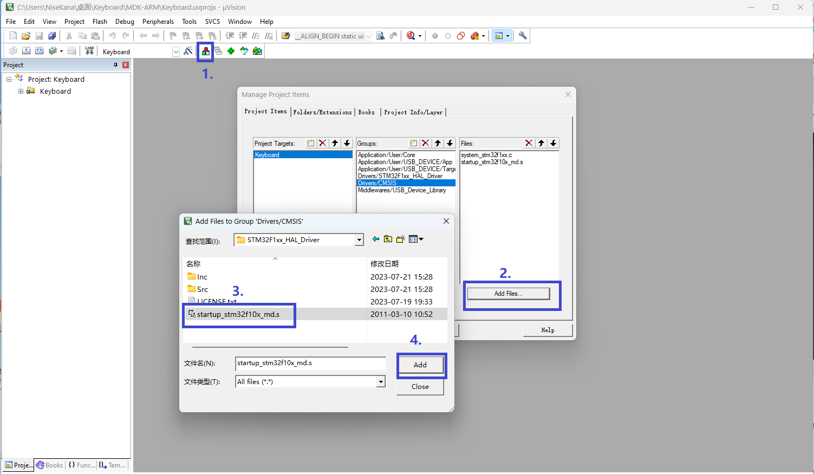
描述文件配置
USB描述文件
在usbd-desc.c文件里面就是有关USB设备的描述文件，比如前面配置的设备品牌，型号等。
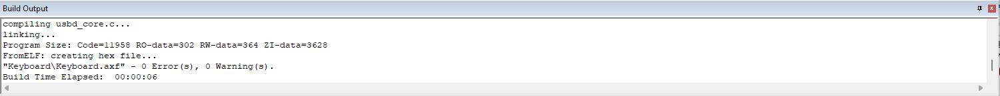
HID描述文件
在usbd-hid.c文件里配置HID描述文件，找到/* USB HID device FS Configuration Descriptor */根据需求修改。
USB最大功率：0x32 表示为该口提供的最大输出电流。（0x32换算十进制即50，再×2 即100）即这里提供最大100ma输出电流。USB2.0最大提供输出500ma电流，即最大设置为 0xFA。
设备类型：0x02 表示该设备为鼠标，0x01 表示该设备为键盘，即修改为 `0x01 。
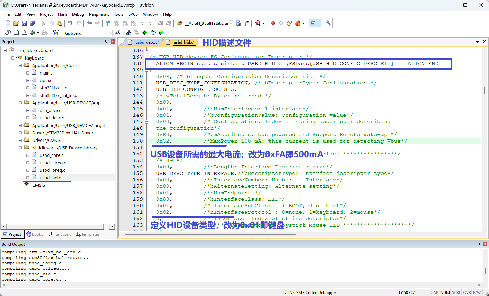
键盘报告描述符
继续在usbd_hid.c文件修改HID_MOUSE_ReportDesc[HID_MOUSE_REPORT_DESC_SIZE]这个数组内容为以下内容。
这里使用的是USB中文网的报告描述符。
相关资料请查看HID报表描述符原理解释 - USB中文网 (usbzh.com) USB键盘报告描述符数据格式分析 - USB中文网 (usbzh.com)。
1 | 0x05,0x01,// Global Generic Desktop |
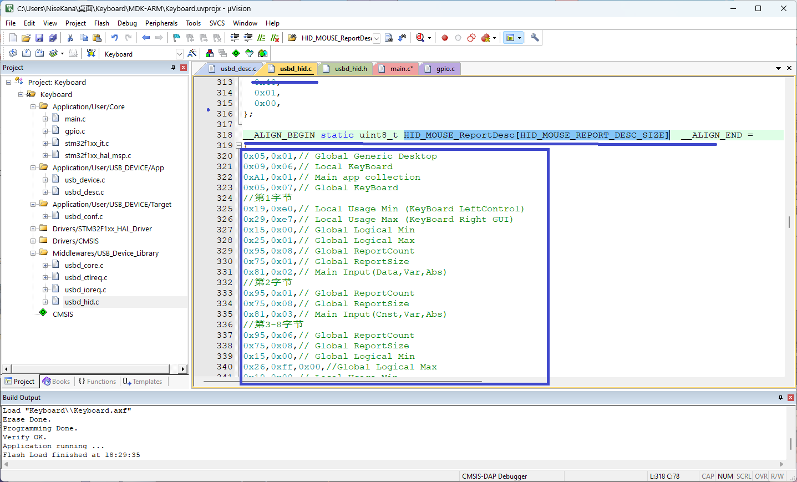
在usbd_hid.h这个文件修改HID_EPIN_SIZE 为0x08U即，HID_MOUSE_REPORT_DESC_SIZE为66U。
HID_EPIN_SIZE 定义HID设备的输入端点缓冲区的大小。这个常量值可以告诉代码在接收HID数据时需要分配多大的缓冲区空间，通常鼠标为4，键盘为8。
HID_MOUSE_REPORT_DESC_SIZE 定义HID鼠标设备的报告描述符的大小。这个常量值可以告诉代码在分配缓冲区时需要为报告描述符预留多大的空间。
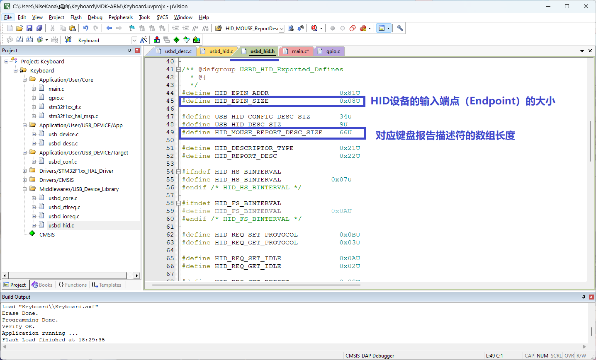
键盘发送文报
键盘数据结构
键盘的描述符共有8字节的输入报告和1字节的输出报告。
1字节输出报告：
- 这1个字节总共用了5bits使用3bits常量来补足成1个字节。5bits用来点亮特殊键盘上的Led灯，比如键盘的大小写，数字键，小键盘的LED灯。
8字节的输入报告：
- Byte0各位则表示左右GUI(win),alt，shift，control键是否按下，按下为1。
- Byte1是保留字节。
- 其6个字节表示此时按下的其他所有键盘按键的键码，从低到高填充，没按就是0x00.如果同时按下的键超过允许，则显示0xff。
参考-USB键盘的数据结构 - USB中文网 (usbzh.com) USB键盘报告描述符数据格式分析 - USB中文网 (usbzh.com)。
键盘发报代码
前面在CubeMX配置HID时已经把PB13，PB14，PB15引脚初始化过了，这里就直接配置发报函数。
1 |
|
完成后编译，下载。
最后
好了，现在一个属于自己的CV键盘就制作完成了。
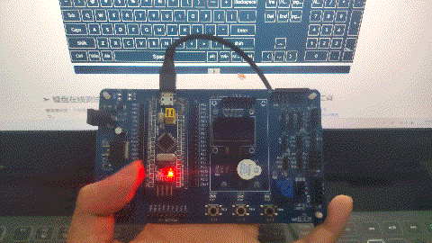
 微信
微信 支付宝
支付宝